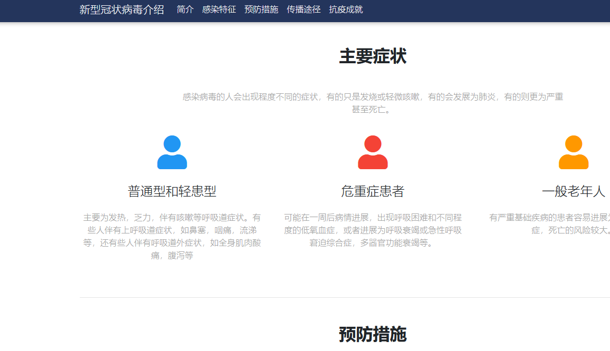
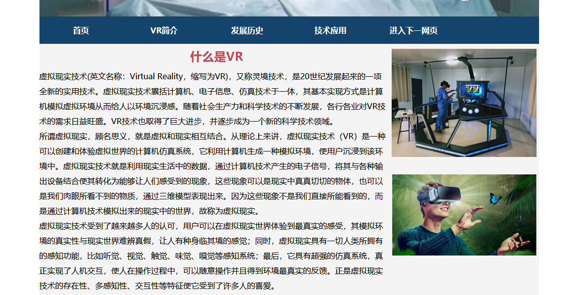

制作的内容
制作的5个静态网页，第一个网页是关于新冠疫情的，第二个网页是关于区块链的，第三个网页是关于VR技术，第四个网页是关于四大名著，第五个网页是关于中国世界文化遗产

第一个网页截图
对新冠病毒进行了介绍
第二个网页截图
对区块链进行了介绍

第三个网页
介绍了下vr技术
开发过程
模板的选取
模板用了三个模板
用了老师的第一个MDB模板和第二个MDB模板，还有网上寻找的一个模板
使用的软件
采用Visual Studio Code进行网页的制作和修改
托管到服务器上
采用的github托管网页
制作过程
对模板里的内容进行修改，修改成自己需要的内容
制作过程截图
写第三个网页时
添加图片到文件夹使用
添加调用图片
遇到的问题及解决和未解决的问题
总结
这次的课程学习，让我对网页了解到了很多知识。
以前只会使用游览器网页，只会用，对其制作和源码一窍不通，遇到网页类的问题最简单的解决方式就是关掉重开，这次的课程学习学会了自己写一点简单的网页并托管，能看懂网页的一些源码了，对于网页上遇到的问题也有了更多的解决方式。
在这次的制作网页过程中也学会了很多，有时候在课上听的理论知识，听完就没在意搞忘了，或者一些内容没有理解清楚，制作网页的过程，让我对课上的一些理论知识有了更深的理解，也学会了很多在课上没有听懂的内容和课上没有涉及的部分内容。
这次的网页制作我选择的是静态网页制作，要求难度没有动态网页那么高，模板用的是老师给出的MDB模板，制作的比较简单，学会了加深了html、CSS、Bootstrap的基础知识。但是对动态网页的知识还需要进一步的了解。